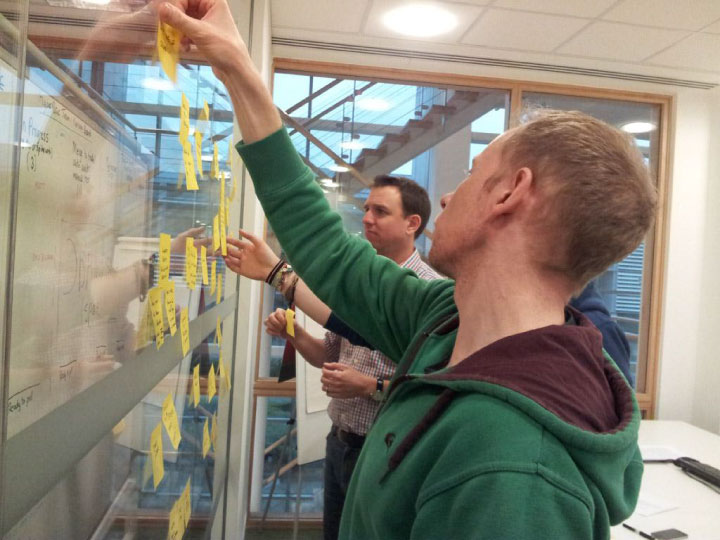
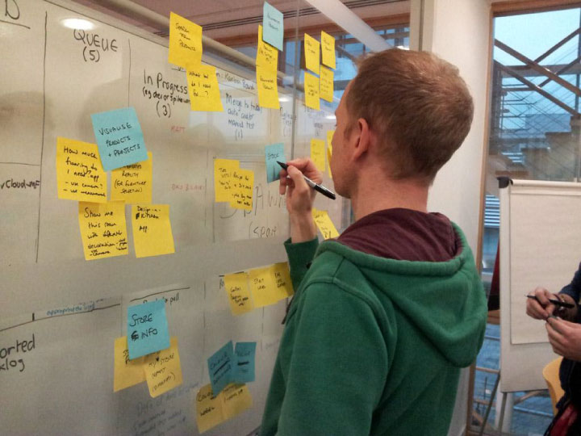
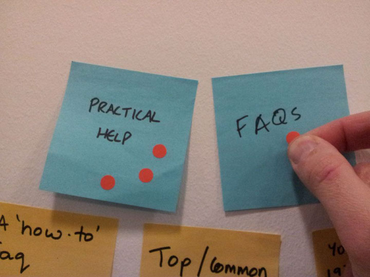
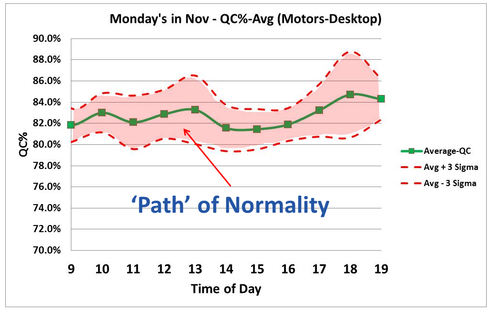
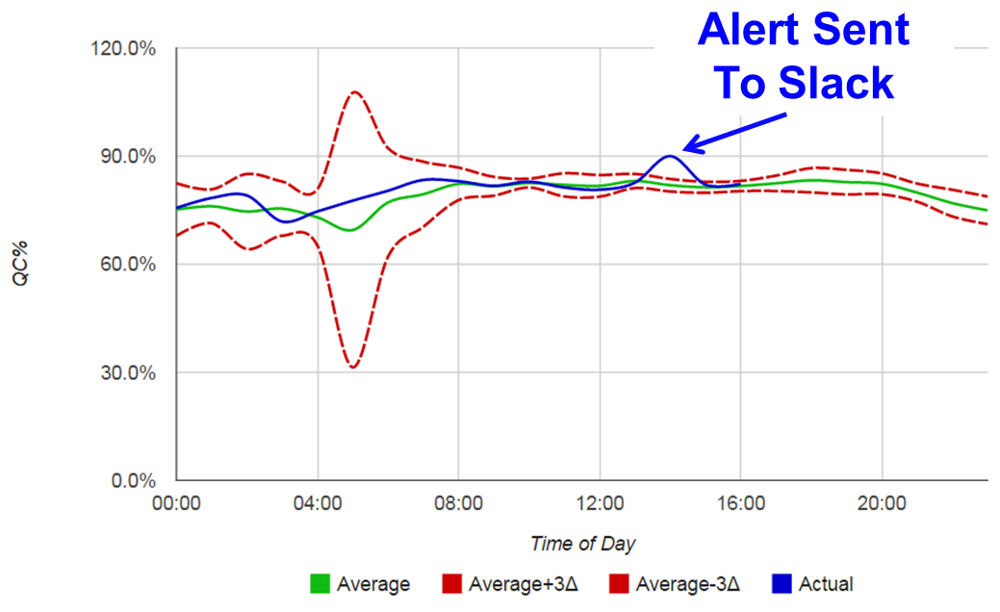

Building a successful User Experience
Robin Scott
March 2015
About ...
- Trained as a designer
- Worked in design and web agencies
- Recently worked in user interface and front-end development roles.
- Front-end developer at comparethemarket.com
What is User Experience?
( Often abbreviated to UX )
A narrow definition of UX :
The design of the user interface of a website or web app.
A broad definition of UX :
Every aspect of the user's interaction with a product, service, or company that make up the user's perceptions of the whole.
- Nielsen Norman Group (Jakob Nielsen)
Narrow definition of UX
- Limits UX to the designer
- A Waterfall approach
- No shared responsibility or vision
Broad definition of UX
- Whole team takes ownership
- UX part of software development
- Agile approach
As IT professionals,
you contribute to your user's experience.
- Development
- Systems & Networks
- Security
- Testing & Quality Assurance
- Database Administration
- Support
The spectrum of
User Experience
Why does experience matter for the website or app user?
88% of online consumers are less likely to return to a site after a bad experience.
Source: Gomez.com
40% of users abandon a website that takes more than 3 seconds to load.
Source: Gomez.com, Akamai.com
94% of a user’s first impressions are design-related.
Source: instantShift
Practices and techniques
for building a successful UX
Core-functionality
Collaboration games
"What features and functionality do users need?"
3 minutes brainstorming
on post-its.
Post-its are stuck on the wall in random order.


Ideas are grouped and given a title.
Groups are voted for with dots.

Groups are ordered by importance.
- Quickly generates and sorts lots of ideas
- The whole team has input
- Allows ideas to be quickly discarded by the team
Reliability
Monitoring and optimisation


Usability and design
'Lean UX' and rapid prototyping
Disadvantage of Photoshop mock-ups
- Can only be created by a designer.
- Don't show interaction.
- Take a long time to create.
- Quickly go out of date.
Sketching and
paper prototyping
- Use sketching and paper prototypes to quickly iterate over ideas.
- Weak ideas can be discarded and good ideas developed.
- Show users your prototypes and get feedback.
Points to takeaway
- UX is much more than just design: functionality and reliability come first.
- Whatever you do in IT, you have users you should care about.
- Attempt to understand your user and monitor their behaviour.
- Get your whole team involved in generating ideas.
- Iterate quickly and fail fast - sketch!
@robscott196
uk.linkedin.com/in/robinscottdev
Slides at
http://robinscott.github.io/presentations/